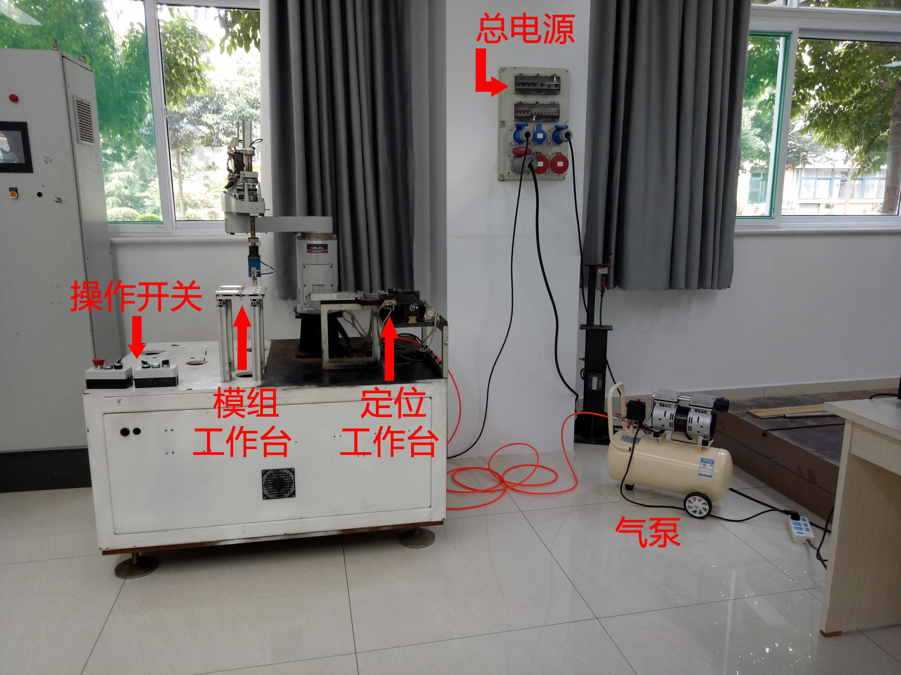

此文就直接将我当初写的一个操作说明书抄过来了：
三菱SCARA机器人操作说明书
一． 注意事项
1. 运行程序前请严格检查机器人周围是否安全，有无异物。
2. 确保气源和电源的正常状态，初始运行程序时一定要低速。
3. 定期每天(现在空气湿度大)打开后面门，把过滤器中的水排掉。注意不要将水漏在控制柜中。
二． 整体概况

三． 操作步骤
1. 将气泵插头插入“接线板”，向上拔起“压力开关”就可以启动气泵了，等待压力表指针超过“外圈30”后旋转“进出气扳手开关”打开出气。
2.在模组工作台上在下图1~5标识处安放1~5个显示模块(最好是<3)。定位工作台不放模块。
3. 确认机器人周围安全，然后顺时针旋转“急停“开关”，让其处于松开状态。同时将“速度”调整到“慢”的档位。
4. 打开墙壁上的电源箱中“总电源”－> “机器人电源”。
5. 等待机器人启动，当下图中绿色”Ready”指示灯会闪烁(4次/秒)时，说明机器人启动完成。
6. 查看机器人周围没有人，按下“启/停”开关，等待约3秒，机器人开始运动。
7. “速度”档位开关可以随时改变机器人运行程度，注意不要一直高速运行，并且高速运行时因为惯性及振动导致摆放显示模块有时会出错，从而有可以损坏气动抓手。
8. “定位”开关是用来控制机器人是否运行到“定位工作台”，一般情况下是如上图所示打开的。
9. 如果要停止，则可在机器人正常运行情况下任意时刻按下“启/停”开关，此时“Ready”指示灯会灭，等待机器人运行完当前命令（比如搬运完一个显示模块，或者走完定位），机器人然后会停止，此时“Ready”指示灯会闪烁，指示当前机器人处于待机状态。
10. 关机步骤： 在按下“停止”开关后，等待机器人完全停止(Ready指示灯闪烁)，扳下墙上电源箱中的“机器人电源”开关，然后关闭“进出气开关”和按下“压力开关”，如此即可关机。 **************** 以下为错误处理简单说明 **************************
11. 如果出现意外情况，按下“急停“开关，机器人会立刻停止。 这种情况如果要恢复运行，需重启电源。
12. 如果出现“Error”指示灯闪烁，并有报警声，按下“复位”按键可以确认消除错误。 如果按下“复位”按键，错误依然没有消除，可以重启电源试试报警是否消除。如果还是报警，则需要用电脑打开Rtoolbox3连接机器人，查看错误代码，根据文档“CR750_CR751_CR760 系列控制器操作说明书(障碍排除)-1511.pdf”进行处理。
13. 天气潮湿时及时排出气泵中的水，否则因为水堵塞气管导致气压不够，机器人末端夹爪会撞到电路板。
14. 其他情况可以先停机，关闭电源，联系技术人员进行处理。